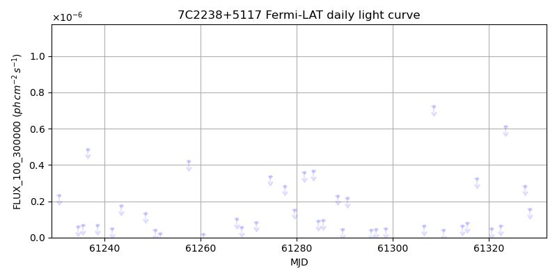
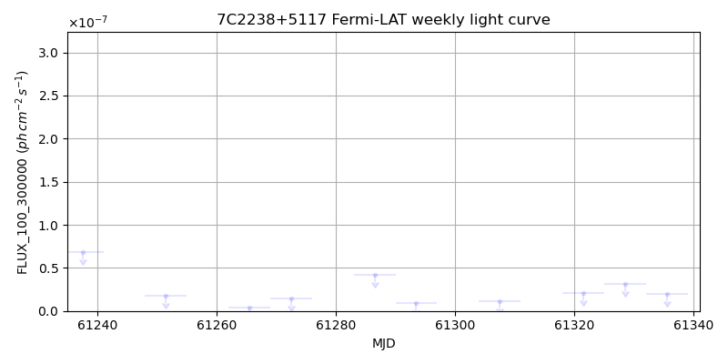
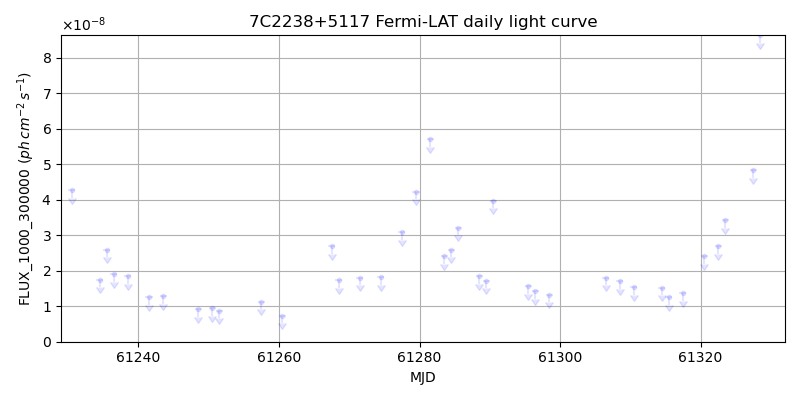
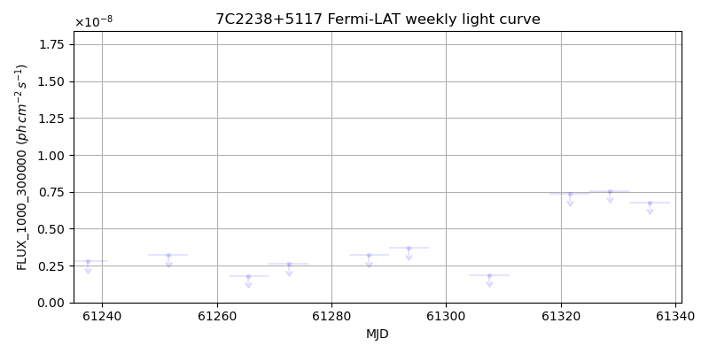

LAT Lightcurve site: https://fermi.gsfc.nasa.gov/ssc/data/access/lat/msl_lc/source/7C_2238p5117
NED: Query
Time of last update of this page: UT: 2026-10-17 15:30 (MJD: 61330.646)
| Property | Value |
|---|---|
| R.A. | 22:40:19.92 |
| Dec. | 51:33:10.8 |
| z | 0.000 |
| 3FGL SpectrumType | |
| 3FGL PL Index | -1.00 |
| 3FGL Flux_100_300000 | -1.00e+00 |
| 3FGL Flux_1000_300000 | -1.00e+00 |
| 3FGL Flux >200 GeV | -1.00e+00 |
| 3FGL Extrap. Crab >200 GeV | -1.00 |
| 3FGL Flux After EBL Absorption >200GeV | -1.00e+00 |
| 3FGL EBL Crab Fraction >200GeV | -1.00 |

| MJD | dMJD | Flux | dFlux | Frac3FGL | FracCrab>200GeV | EBLFracCrab>200GeV |
|---|---|---|---|---|---|---|
| 61322.50 | 0.50 | 6.41e-08 | 0.00e+00 | 0.00 | 0.00 | -0.00 |
| 61323.50 | 0.50 | 6.10e-07 | 0.00e+00 | 0.00 | 0.00 | -0.00 |
| 61327.50 | 0.50 | 2.84e-07 | 0.00e+00 | 0.00 | 0.00 | -0.00 |
| 61328.50 | 0.50 | 1.55e-07 | 0.00e+00 | 0.00 | 0.00 | -0.00 |
| 61329.50 | 0.50 | 1.32e-06 | 0.00e+00 | 0.00 | 0.00 | -0.00 |

| MJD | dMJD | Flux | dFlux | Frac3FGL | FracCrab>200GeV | EBLFracCrab>200GeV |
|---|---|---|---|---|---|---|
| 61279.50 | 3.50 | 7.79e-07 | 0.00e+00 | 0.00 | 0.00 | -0.00 |
| 61286.50 | 3.50 | 4.18e-08 | 0.00e+00 | 0.00 | 0.00 | -0.00 |
| 61293.50 | 3.50 | 9.21e-09 | 0.00e+00 | 0.00 | 0.00 | -0.00 |
| 61307.50 | 3.50 | 1.09e-08 | 0.00e+00 | 0.00 | 0.00 | -0.00 |
| 61321.50 | 3.50 | 2.08e-08 | 0.00e+00 | 0.00 | 0.00 | -0.00 |

| MJD | dMJD | Flux | dFlux | Frac3FGL | FracCrab>200GeV | EBLFracCrab>200GeV |
|---|---|---|---|---|---|---|
| 61322.50 | 0.50 | 2.70e-08 | 0.00e+00 | 0.00 | 0.00 | -0.00 |
| 61323.50 | 0.50 | 3.42e-08 | 0.00e+00 | 0.00 | 0.00 | -0.00 |
| 61327.50 | 0.50 | 4.84e-08 | 0.00e+00 | 0.00 | 0.00 | -0.00 |
| 61328.50 | 0.50 | 8.62e-08 | 0.00e+00 | 0.00 | 0.00 | -0.00 |
| 61329.50 | 0.50 | 2.86e-07 | 0.00e+00 | 0.00 | 0.00 | -0.00 |

| MJD | dMJD | Flux | dFlux | Frac3FGL | FracCrab>200GeV | EBLFracCrab>200GeV |
|---|---|---|---|---|---|---|
| 61279.50 | 3.50 | 5.68e-08 | 0.00e+00 | 0.00 | 0.00 | -0.00 |
| 61286.50 | 3.50 | 3.23e-09 | 0.00e+00 | 0.00 | 0.00 | -0.00 |
| 61293.50 | 3.50 | 3.68e-09 | 0.00e+00 | 0.00 | 0.00 | -0.00 |
| 61307.50 | 3.50 | 1.87e-09 | 0.00e+00 | 0.00 | 0.00 | -0.00 |
| 61321.50 | 3.50 | 7.37e-09 | 0.00e+00 | 0.00 | 0.00 | -0.00 |
--------------------------------------------------------- Using user-supplied coords: 22:40:19.92 51:33:10.8 2000 --------------------------------------------------------- FLWO UT night of: 2026-10-18 Local Sid. @ Midnight: 01:23 Sunset (-15.0) (local, UT): 18:56 01:56 Sunrise (-15.0) (local, UT): 05:22 12:22 Moonrise (local, UT): Moonset (local, UT): 22:59 05:59 Moon phase: 0.47 --------------------------------------------------------- AzTime LSID UT Obj_el Obj_az Mn_el Mn_az Sep. --------------------------------------------------------- 18:56 20:18 01:56 57.2 41.9 30.5 195.3 89.5 19:26 20:48 02:26 61.3 37.5 28.5 202.5 89.4 19:56 21:18 02:56 64.9 31.0 25.9 209.3 89.2 20:26 21:48 03:26 67.8 21.9 22.6 215.6 89.1 20:56 22:19 03:56 69.6 10.0 18.8 221.3 89.0 21:26 22:49 04:26 69.9 356.5 14.5 226.6 88.8 21:56 23:19 04:56 68.8 343.7 9.9 231.4 88.6 22:26 23:49 05:26 66.4 333.1 5.0 235.7 88.5 22:56 00:19 05:56 63.2 325.4 0.2 239.8 88.3 23:26 00:49 06:26 59.3 320.0 -5.5 243.5 88.1 23:56 01:19 06:56 55.0 316.6 -11.3 247.0 87.9 00:26 01:49 07:26 50.5 314.5 -17.0 250.4 87.7 00:56 02:19 07:56 45.9 313.5 -22.8 253.6 87.5 01:26 02:49 08:26 41.2 313.3 -28.7 256.7 87.3 01:56 03:19 08:56 36.6 313.7 -34.7 259.8 87.1 02:26 03:49 09:26 32.0 314.6 -40.7 263.0 86.9 02:56 04:20 09:56 27.5 315.9 -46.8 266.4 86.7 03:26 04:50 10:26 23.1 317.7 -52.8 270.1 86.4 03:56 05:20 10:56 18.9 319.8 -58.9 274.3 86.2 04:26 05:50 11:26 14.9 322.2 -64.9 279.6 86.0 04:56 06:20 11:56 11.1 325.0 -70.8 287.0 85.8 05:22 06:46 12:22 8.1 327.6 -75.7 297.1 85.6 --------------------------------------------------------- Dark hours >55 deg.: 0.95 srcstart (UT): 2026-10-18 05:59 srcend (UT): 2026-10-18 06:56